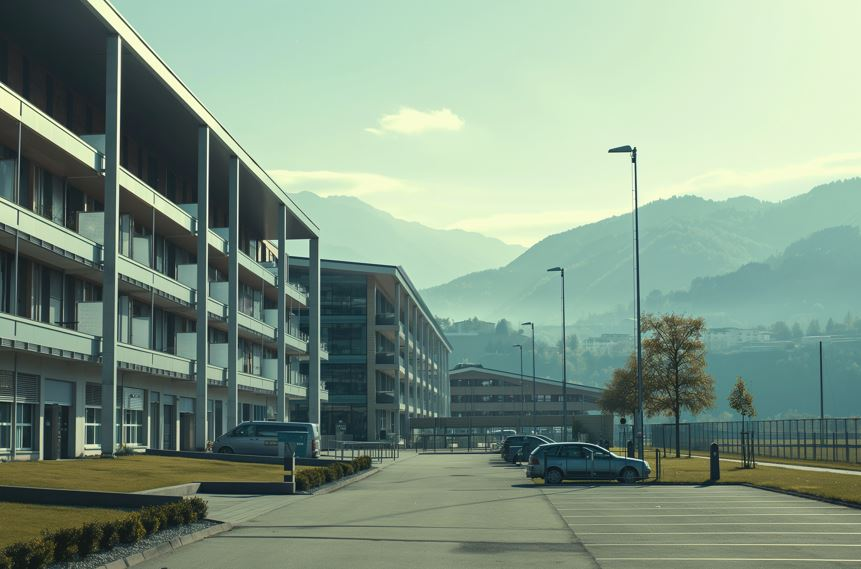

About Architecture
Contents From Wikipedia
- Architecture
- Modern Architecture
- Contemporary Architecture
Architecture
Architecture is the art and technique of designing and building, as distinguished from the skills associated with construction. It is both the process and the product of sketching, conceiving, planning, designing, and constructing buildings or other structures. The term comes from Latin architectura; from Ancient Greek ἀρχιτέκτων (arkhitéktōn) 'architect'; from ἀρχι- (arkhi-) 'chief', and τέκτων (téktōn) 'creator'. Architectural works, in the material form of buildings, are often perceived as cultural symbols and as works of art. Historical civilisations are often identified with their surviving architectural achievements.

Architecture can mean:
- A general term to describe buildings and other physical structures.
- The art and science of designing buildings and (some) nonbuilding structures.
- The style of design and method of construction of buildings and other physical structures.
- A unifying or coherent form or structure.
- Knowledge of art, science, technology, and humanity.
- The design activity of the architect, from the macro-level (urban design, landscape architecture) to the micro-level (construction details and furniture). The practice of the architect, where architecture means offering or rendering professional services in connection with the design and construction of buildings, or built environments.
- Architecture is the science that studies the physical, functional, and aesthetic characteristics, of buildings, open spaces, and other forms of urban environment.